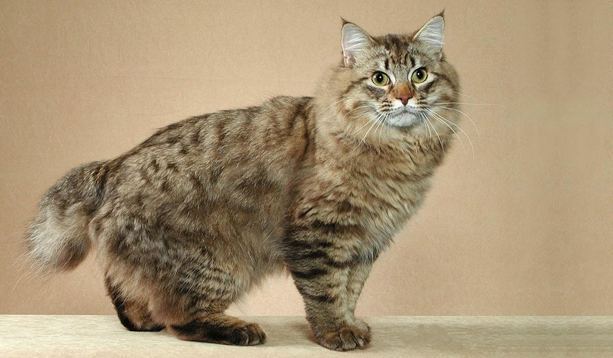
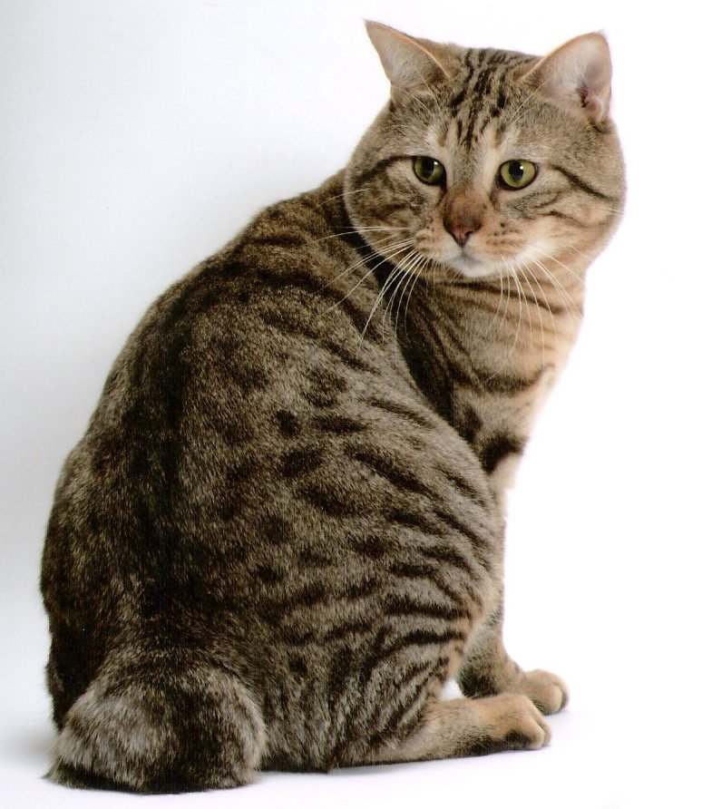
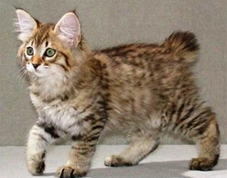
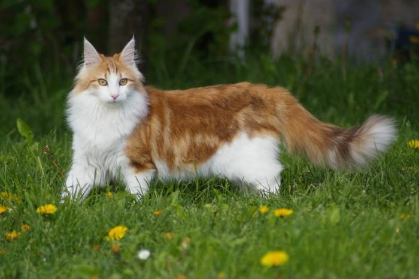
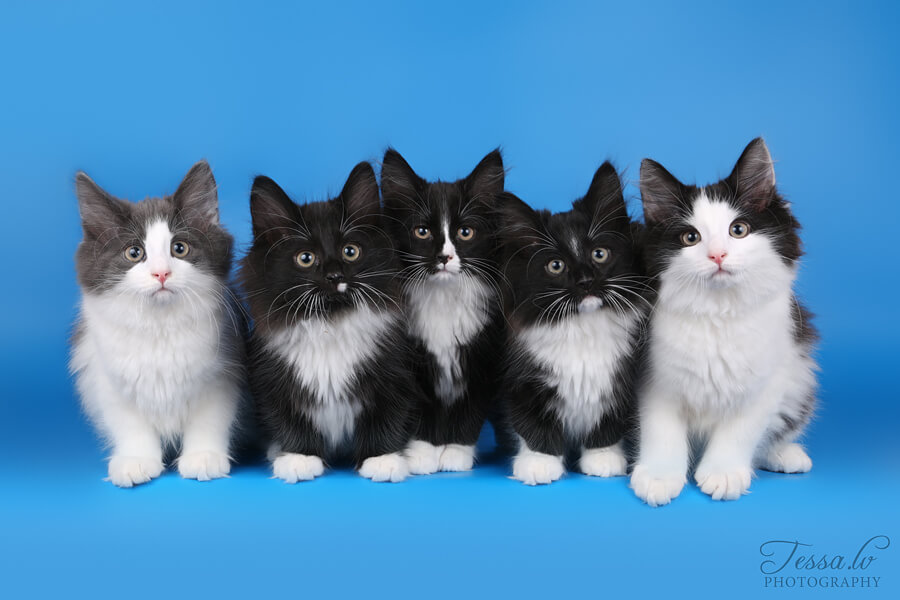
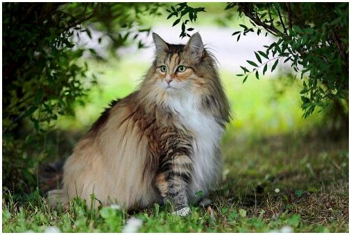
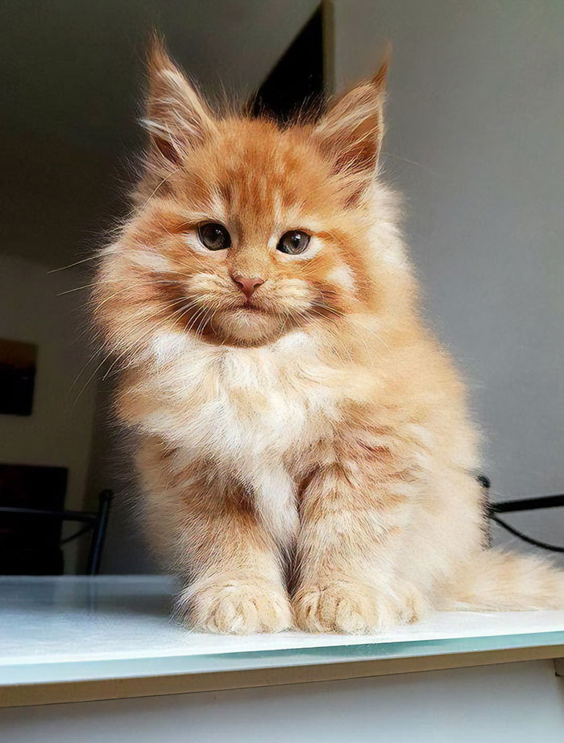
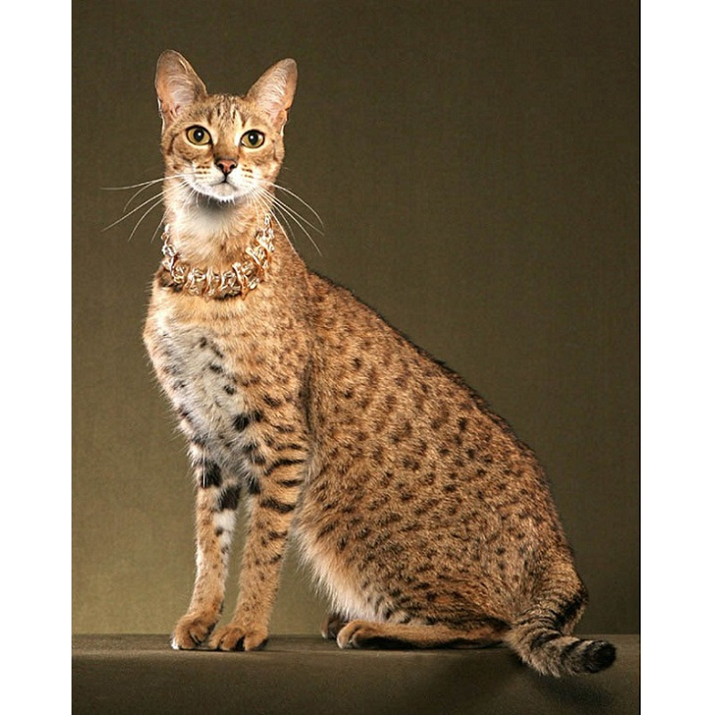
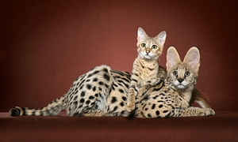
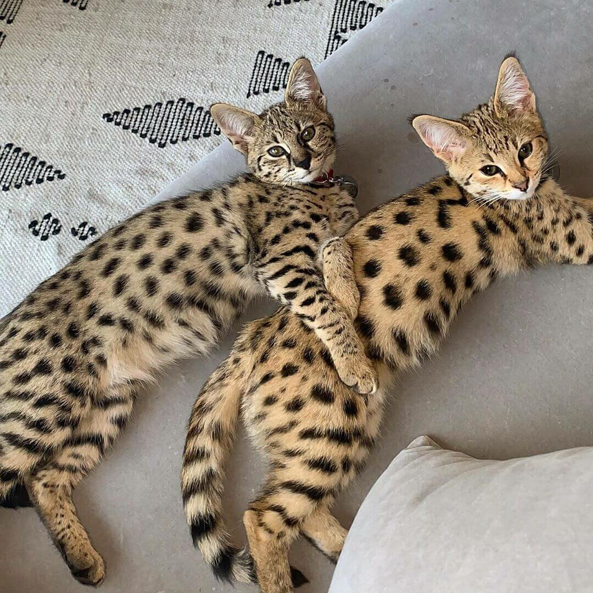

Американский бобтейл
Американский бобтейл – дружелюбная, любящая, ласковая и излучающая нежность кошка.Главная особенность – короткий, как будто обрубленный хвост. Производит впечатление дикого животного, что резко контрастирует с его абсолютно не агрессивным, добродушным характером. Кошки этой породы мускулистые, крепкие, обычно среднего размера, но есть и достаточно крупные особи. Американские бобтейлы – умные и привязанные к человеку домашние животные. Порода делится на длинношерстных и короткошерстных.
Достаточно молодая порода, родоначальник был обнаружен в 1965 г. Произошло это так: супружеская пара Сандерс нашла брошенного котенка неподалеку от индейской резервации в штате Южная Аризона. Котенок как котенок, если бы не одно «но»: у него был короткий хвостик, загнутый кверху. «Невестой» его стала сиамская кошечка, и в первом же помете появился бесхвостый котенок, который и дал начало развитию породы. Спустя время короткохвостыми мурлыками заинтересовались заводчики, и с этого момента начались работы по выведению американского бобтейла. Но, есть мнение, что он появился в результате мутаций при разведении рэгдоллов. Еще одна версия основывается на предположении, что предками американского бобтейла могли быть японский бобтейл, мэнкс и даже рысь.
Очень дружелюбная, любящая, ласковая, излучающая нежность порода. Американские бобтейлы — уравновешенные, спокойные кошки, но нелегко переносят одиночество. Они по-настоящему привязаны к своему хозяину и обладают уникальной способностью чутко улавливать малейшие изменения в его настроении. В США к их помощи прибегают при некоторых видах терапии. Прекрасно уживаются с другими обитателями дома, даже с собаками. Будучи крайне активными и энергичными, очень любят прогулки и игры на свежем воздухе. Так как они быстро привыкают к поводку, моцион доставит массу удовольствия не только питомцу, но и хозяину, а наличие поводка избавит от ненужных переживаний и хлопот.Rошка этой породы, как собака, по команде во время игры приносит игрушку или другие предметы. Отлично ладит с детьми, с удовольствием играет с ними. Если в доме живет американский бобтейл, нежность, веселая возня и прекрасные отношения между питомцем и членами семьи гарантированы.
НаверхНорвежская лесная кошка
Норвежская лесная кошка – все еще довольно редкая в наших широтах, но давно любимая европейцами порода. Это дружелюбный и независимый питомец, который легко найдет «ключик» к каждому члену семьи.
Норвежские лесные кошки – довольно крупные животные. Взрослые коты могут весить до 10 кг. Они отличаются хорошим здоровьем и не требуют хлопотного ухода. Устойчивая психика и спокойный характер позволяют кошкам адаптироваться к жизни в большой семье. При играх норвежские лесные кошки почти никогда не выпускают когти и не проявляют агрессии в стрессовых ситуациях, что особенно ценят родители маленьких детей. Главные требования к содержанию – достаточные физические нагрузки (идеально, если это будут свободные прогулки) и наличие собственной «крепости», куда питомец может удалиться, когда хочет уединения.
Размер норвежской лесной кошки колеблется от среднего до крупного. Как и другие крупные породы, окончательной зрелости они достигают достаточно поздно – в 4-5 лет. Животные кажутся массивнее за счет густой шерсти. Окрас может быть сплошным, биколорным, затененным, дымчатым, табби. В общем признаны 64 варианта окраса норвежских лесных кошек. Поскольку норвежские лесные кошки долгое время были предоставлены исключительно заботе природы, у них довольно сильна тяга к «дикой» жизни. Конечно, норвегов можно содержать и в городской квартире, однако комфортнее всего они будут чувствовать себя в частном доме, где есть возможность ежедневно выходить на прогулки и оттачивать свои охотничьи навыки.
НаверхМейн кун

Мейн-кун - это одна из крупнейших порода кошек в мире. Тело мощное, прямоугольное, с широкой грудной клеткой и массивной головой. Свой рост эти животные заканчивают только в 3-5 лет, хотя самой медленно взрослеющей породой их назвать нельзя. Отличительной особенностью экстерьера стоит назвать кисточки на ушах, напоминающие о рысях, и огромный пушистый «енотовый» хвост. Кошки значительно мельче котов не только во взрослом возрасте, но и при рождении. В среднем разница в весе между самками и самцами составляет четверть. Шерсть мейн-кунов подвержена сезонным изменениям, как и у многих аборигенных пород. Летом она менее густая и короткая, в то время как зимой превращается в шикарную шубу.

Отличительной чертой кошек этой породы является независимость. Они могут не подпускать к себе людей и не давать себя гладить. При этом эти кошки очень трогательно и трепетно относятся к маленьким детям и охотно кооперируются для игр с детьми более старшего возраста. Мейн-куны очень умны и хорошо запоминают команды, подобно собакам, а также очень четко улавливают интонации и изменения в настроении хозяина, проявляя при этом несвойственный животным такт и понимание. Мейн-кун не будет приставать с общением или требовать внимания, если хозяин не в настроении.
Основная проблема владельцев этих кошек — организация специальных мест, где их питомцы могут поточить когти. Очень часто кошки используют для этих целей обои, мягкую мебель или другие предметы интерьера. Все то, что использовать в качестве когтеточки нельзя. Так же кошки этой породы точат когти не в вертикальном положении, как обычно, а в горизонтальном. То есть в данном случае страдают ковры, паласы и другие напольные покрытия. Эти кошки любят воду и с удовольствием купаются. Поэтому с мытьем, как правило, у хозяев проблем не возникает. Множество опасений обычно связано с уходом за шерстью мейн-кунов — она достаточно густая и длинная. Но при этом она не скатывается в колтуны и не сваливается, ее не нужно вычесывать по несколько часов ежедневно. Одного раза в неделю будет достаточно. Но в дополнение к обычной расческе следует приобрести пуходерку — у кошек этой породы очень густой подшерсток, который нуждается во внимании.
НаверхСаванна
Саванна — высокая худая кошка с длинными лапами. Взрослая особь может достигать веса в 15 кг при росте 60 см в холке. Как правило, саванна имеет пятнистый окрас, но иногда встречаются кошки с мраморным рисунком, снежным окрасом, а также с шерстью голубого или других ненасыщенных цветов. Уши — высокие, с глубокой «чашкой», округленные, прямые (задняя часть уха имеет светлую полосу по центру, с черным, темно-серым или коричневым окаймлением, что создает «эффект глаза»). У этих кошек широкий нос и глаза с нависающими веками. На коротких хвостах — черные кольца и однотонный черный кончик.
Некоторые кошки этой породы общительны и дружелюбны с людьми и животными. Другие, наоборот, прячутся и шипят на человека. Кошки этой породы крупные и сильные: могут прыгать на высоту до двух с половиной метров. Саванны быстро обучаются, при этом в попытках овладеть навыком проявляют особую настойчивость. Саванна может «щебетать», как сервал или мейн-кун. Представители этой породы сдержанны, независимы и самодостаточны. Лежанку для кошки лучше разместить повыше — в месте, где животное будет чувствовать себя в безопасности.
Кошки достаточно привередливы в питании, при этом они должны получать из еды 41 вид различных питательных веществ. Их пропорции будут разными — в зависимости от возраста, стиля жизни и здоровья животного в целом. Поэтому неудивительно, что котенку, у которого много энергии, требуется иной баланс компонентов, чем взрослой кошке с низкой активностью. Следует также помнить, что для поддержания идеальной формы питомца вам необходимо давать ему определенное количество еды.
Наверх